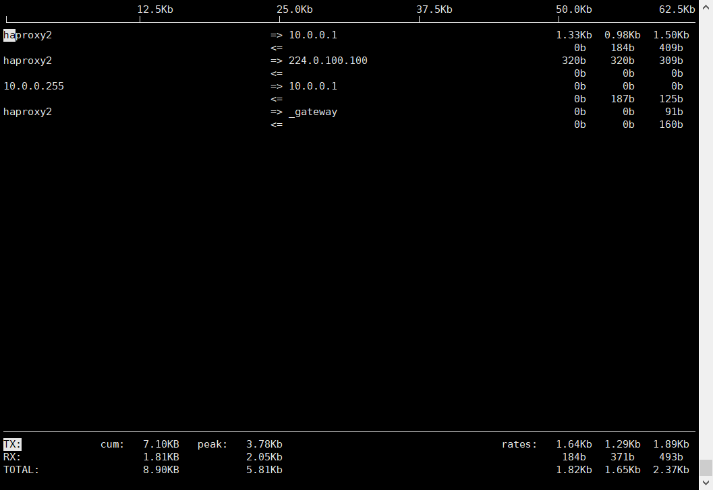

Linux查看系统性能指标的命令
本文主要总结了查看Linux网络、磁盘、CPU和内存、进程资源占用情况的命令
网络
iperf
基于ICMP协议
服务器端-s 以server模式启动 -D后台进程运行
客户端-c IP 作为客户端连接后面的服务器端地址
1 | |
ifstat
统计网络接口状态
- RX Pkts/Rate 数据包接收流量
- RX Errs/Drop 丢包
- TX Pkts/Rate 数据包发送流量
- RX Data/Rate 数据接收流量
- TX Data/Rate 数据发送流量
iftop
用于查找哪个IP占用了大量流量
是一款实时流量监控工具，监控TCP/IP连接等，缺点就是无报表功能，必须以root身份才能运行。
第一行为带宽。 中间为连接列表，最后三列分别是2秒，10秒和40秒的平均流量
=> 代表发送 <= 代表接收
最后三行表示发送，接收和全部的流量， 第二列为你运行iftop到目前流量，第三列为高峰值，第四列为平均值。

iptraf
iptraf命令 可以实时地监视网卡流量，可以生成网络协议数据包信息、以太网信息、网络节点状态和 ip校验和错误等信息。
-i网络接口：立即在指定网络接口上开启IP流量监视；
-g：立即开始生成网络接口的概要状态信息；
-d网络接口：在指定网络接口上立即开始监视明细的网络流量信息；
-s网络接口：在指定网络接口上立即开始监视TCP和UDP网络流量信息；
-z网络接口：在指定网络接口上显示包计数；
-l网络接口：在指定网络接口上立即开始监视局域网工作站信息；
-t时间：指定iptraf指令监视的时间；
-B；将标注输出重新定向到“/dev/null”，关闭标注输入，将程序作为后台进程运行；
磁盘
df
直观显示各磁盘及分区使用情况，显示结果也方便df -h | awk -F’[ ]+|%’ ‘NR!=1{print $5}’ | sort -nr 取出Use%
du
du命令是对文件和目录磁盘使用的空间的查看，和df命令有明显区别。
用于查看当前目录下子目录大小，文件占用空间
1 | |
iostat
监视系统输入输出设备和CPU的使用情况
它的特点是汇报磁盘活动统计情况，同 时也会汇报出CPU使用情况。同vmstat一样，iostat也有一个弱点，就是它不能对某个进程进行深入分析，仅对系统的整体情况进行分析。
iotop
是一个用来监视磁盘I/O使用状况的top类工具。iotop具有与top相似的UI，其中包括 PID、用户、I/O、进程等相关信息。Linux下的IO统计工具如iostat，nmon等大多数是只能统计到 每个设备的读写情况，iotop命令可以很方便的查看每个进程是如何使用IO的
-b：批量显示，无交互，主要用作记录到文件。
-n NUM：显示NUM次，主要用于非交互式模式。
-d SEC：间隔SEC秒显示一次。
-p PID：监控的进程pid。
-u USER：监控的进程用户。
CPU和内存
vmstat
含义为显示虚拟内存状态（“Viryual Memor Statics”），但是它可以报告关于进 程、内存、I/O等系统整体运行状态。 以下为选项
- -a：显示活动内页；
- -f：显示启动后创建的进程总数；
- -m：显示slab信息；
- -n：头信息仅显示一次；
- -s：以表格方式显示事件计数器和内存状态；
- -d：报告磁盘状态；
- -p：显示指定的硬盘分区状态；
- -S：输出信息的单位。
procs： r是等待CPU的进程数，b是等待IO的进程数
memory：swapd使用虚拟内存大小，cache缓存文件大小
swap：si每秒从磁盘交换分区写入内存的大小，so每秒从内存（内存达到使用swap分区的阈值后才不为0）
system：in每秒中断数 cs每秒上下文切换书
cpu：us用户进程执行时间百分比(user time) sy内核系统进程执行时间百分比(system time) wa是IO等待时间百分比 id是空闲时间百分比
uptime
查看系统负载。系统平均负载是指在特定时间间隔内运行队列中的平均进程数。
能够打印系统总共运行了多长时间和系统的平均负载。uptime命令可以显示的信息显示 依次为：现在时间、系统已经运行了多长时间、目前有多少登陆用户、系统在过去的1分钟、5分钟和15 分钟内的平均负载。
如果每个CPU内核的当前活动进程数不大于3的话，那么系统的性能是良好的。
1 | |
free
查看内存。 -s # 间隔#秒持续观察
- total：内存总数；
- used：已经使用的内存数；
- free：空闲的内存数；
- shared：当前已经废弃不用；
- buffers Buffer：缓存内存数；
- cached Page：缓存内存数。
进程
pstree
以树状图的方式展现进程之间的派生关系，显示效果比较直观。
ps
用于报告当前系统的进程状态。可以搭配kill指令随时中断、删除不必要的程序。ps命令是最 基本同时也是非常强大的进程查看命令，使用该命令可以确定有哪些进程正在运行和运行的状态、进程 是否结束、进程有没有僵死、哪些进程占用了过多的资源等等，总之大部分信息都是可以通过执行该命令得到的
- USER：该 process 属于那个使用者账号的
- PID ：该 process 的号码
- %CPU：该 process 使用掉的 CPU 资源百分比
- %MEM：该 process 所占用的物理内存百分比
- VSZ ：该 process 使用掉的虚拟内存量 (Kbytes)
- RSS ：该 process 占用的固定的内存量 (Kbytes)
- TTY ：该 process 是在那个终端机上面运作，若与终端机无关，则显示 ?，另外， tty1-
- tty6 是本机上面的登入者程序，若为 pts/0 等等的，则表示为由网络连接进主机的程序。
- STAT：该程序目前的状态，主要的状态有
- R ：该程序目前正在运作，或者是可被运作
- S ：该程序目前正在睡眠当中 (可说是 idle 状态)，但可被某些讯号 (signal) 唤醒。
- T ：该程序目前正在侦测或者是停止了
- Z ：该程序应该已经终止，但是其父程序却无法正常的终止他，造成 zombie (疆尸) 程序的状
- 态
- START：该 process 被触发启动的时间
- TIME ：该 process 实际使用 CPU 运作的时间
1 | |
本博客所有文章除特别声明外，均采用 CC BY-SA 4.0 协议 ，转载请注明出处！